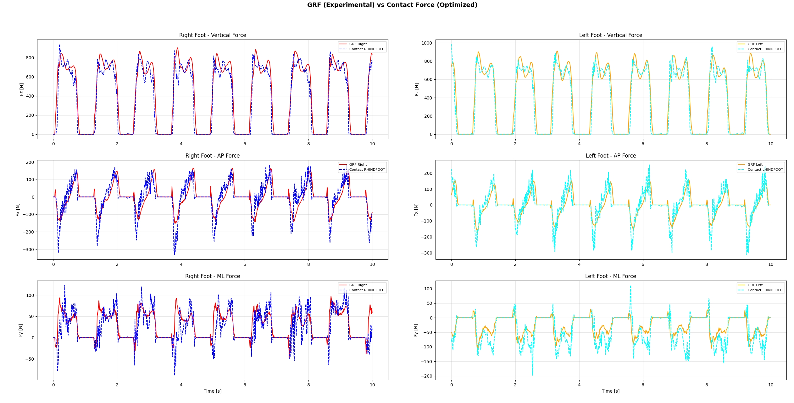
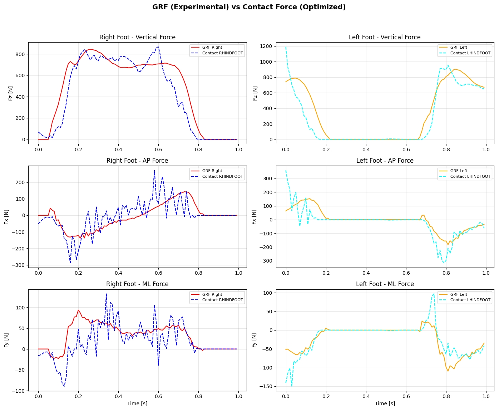

Inverse Kinematics
Optimize generalized coordinates by tracking marker trajectories from motion data.
Current Work
A modular multibody trajectory optimization framework for musculoskeletal control, supporting custom rigid-body models, inverse kinematics, inverse dynamics, contact wrench mapping, multi-phase transcription, and GRF tracking.
body, joint, marker, root, gravity
[FK] obj = F(q)
[ID] tau = G(q, f, qdot, qddot)
[FD] qddot = J(q, qdot, f, tau)
(F, COP) -> (tau_xyz, f_xyz)
marker trajectories and experimental GRF
marker tracking -> joint angle trajectory
joint angle + mapped wrench -> joint torque
The model module parses a structured model.yaml file and organizes
the human model as bodies, joints, marker frames, root configuration, and
gravity. This makes the framework independent of a fixed model template and
suitable for rapid testing of custom rigid-body structures.
The optimizer separates problem definition from numerical transcription. A parser and builder define variables, constraints, costs, bounds, and initial values for a single frame. The framework then maps the problem to the full movement period through collocation and solves the resulting nonlinear program.
Wrench-mapping: (F, COP) -> (tau_xyz, f_xyz)
Used to connect measured force plate data, contact points, and inverse dynamics constraints.
Optimize generalized coordinates by tracking marker trajectories from motion data.
Estimate joint torques with RNEA using joint states and mapped contact wrenches.
Track experimental ground reaction forces with optimized contact forces.
Support contact constraints for coupling motion trajectories with physical interaction.
The current framework has been tested on motion trajectory input, joint torque optimization, and ground reaction force tracking. The optimized contact forces broadly follow experimental GRF profiles across vertical, anterior-posterior, and medial-lateral directions.

